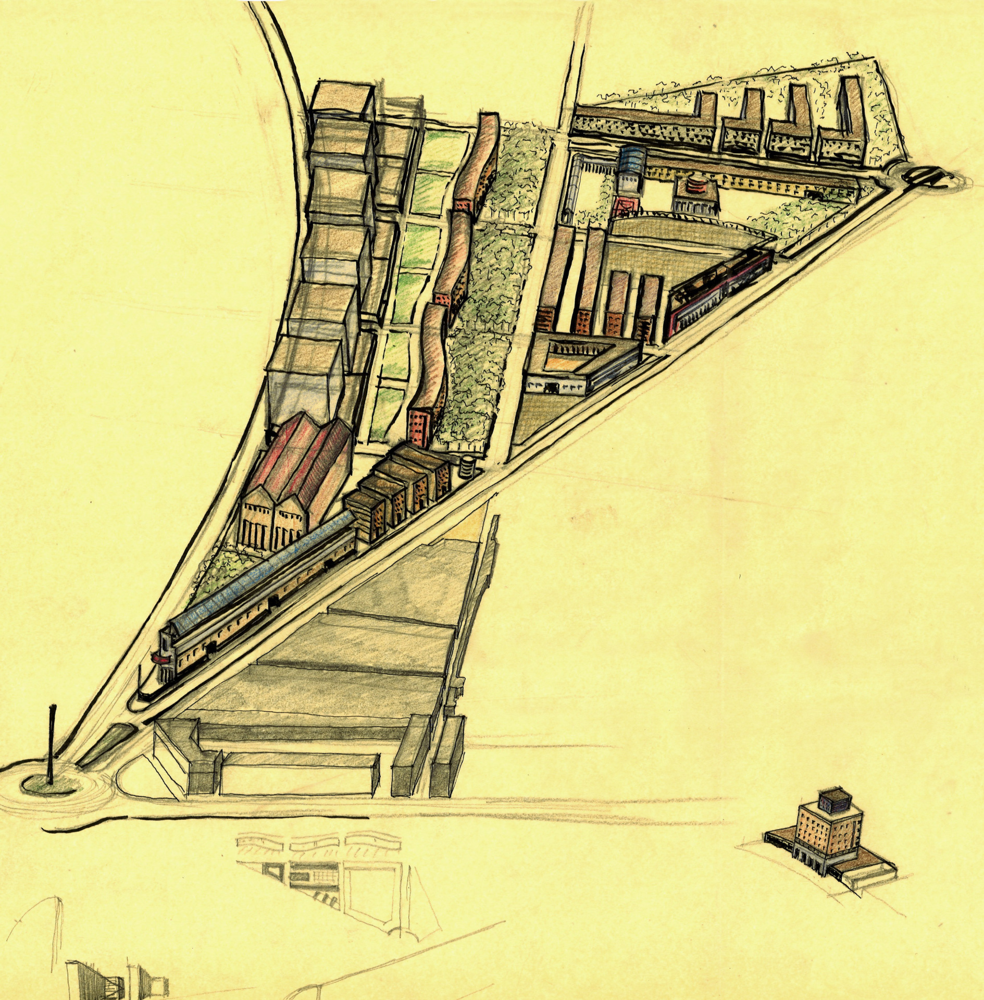

Archivo de proyectos · 1976—2026
Una vida
dedicada a
crear.
Arquitectura, ciudad, diseño de objetos y expresión gráfica. Una selección del universo creativo de Carlos Flores De Santis, reunida a partir de su libro Proyectos (2026).

ARCHIVO CFS · SEVILLA62Trabajos catalogados
03Ámbitos creativos
2026Edición del libro
Catálogo completo
Proyectos seleccionados.
No se han encontrado proyectos.
El autor
Carlos Flores
De Santis
Arquitecto formado en la Escuela de Arquitectura de Sevilla, donde ingresó en 1974 y obtuvo el título en 1984. Su trayectoria reúne el ejercicio profesional de la arquitectura, el urbanismo, la docencia y la creación de objetos y trabajos gráficos.
Esta web convierte en un archivo accesible los tres capítulos del libro Proyectos, publicado en octubre de 2026, conservando el material gráfico original y la identificación de cada trabajo.